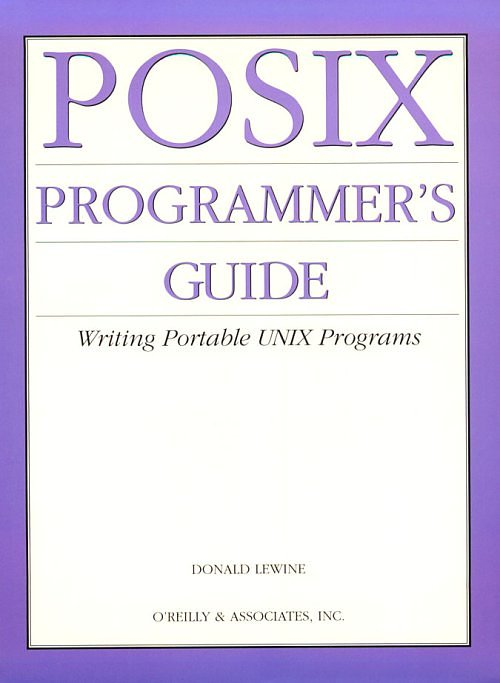
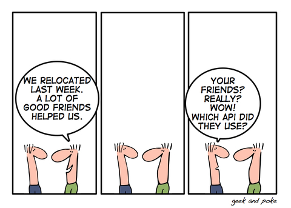

¿De qué estamos hablando?
Christofer Hoff reclama si alguien ha redefinido los términos “abierto” e “interoperable”, sin avisarle, a propósito de la siguiente afirmación:
Singing the vcloud API standard song is very astute. It reassures all people already on board and climbing on board the VMware bandwagon that VMware is open and not looking to lock them in. Even if Microsoft doesn't join in this standardisation effort with a whole heart, it doesn't matter so long as VMware gets enough critical mass.
Cantar la canción del estándar de la API vcloud es muy astuto. Tranquiliza a todos los que están a bordo del vagón de VMware porque VMWare es abierto, y no está buscando encerrarlos. Aún si Microsoft no se une a este esfuerzo de estandarización con todo su corazón, no importa en cuanto VM Ware obtenga suficiente masa crítica.
¡Cómo puedes afirmar que usar la API de VMWare es no cerrarse en VMWare como proveedor (*)!
Standards are great, especially when they're yours – Cristofer Hoff
When a vendor like VMware crafts an architecture, creates a technology platform, defines an API, gets providers to subscribe to offering it as a service and does so with the full knowledge that it REQUIRES their platform to really function, and THEN calls it “open” and “interoperable,” because an API exists, it is intellectually dishonest and about as transparent as saran wrap to call that a “standard” to imply it is available regardless of platform.
Cuando un proveedor crea una tecnología, define una API, y ofrece un servicio que REQUIERE de su plataforma para realmente operar, y luego llama abierto, e interoperable, a todo esto, sólo porque existe una API, es intelectualmente deshonesto, y poco transparente.
Ese es un caso. En estos momentos, en que se está desarrollando la industria de la nube, que no es otra cosa, que llevar a la práctica viejas ideas, que no contaban con el soporte adecuado para implementarlas, es claro que hay muchas intenciones de volverse en el principal monopolista de este negocio.
Lo que hace entonces una empresa como VMWare es vendernos una píldora roja de apertura, e interoperabilidad, cuando en realidad nos entrega una píldora azul, y lo que quiere es establecerse como el principal monopolista de este nuevo negocio.
Yo creo que VMWare quiere ser el CISCO de la nube, al final, toda la infraestructura es sostenida por él, y los demás terminan quedando atrapados en su “estándar abierto”.
¿Qué es una API?
Las API no son estándares abiertos, no son parte de los principios del código abierto. Las API no son neutrales tecnológicamente. Porque las API son herramientas, nada más.

Veamos el caso del estándar abierto IEEE 1003, conocido como POSIX (nombre sugerido por Richard Stallman).
POSIX es un estándar, que define una API, junto con un conjunto de utilitarios, e interfaces de usuario para todo software que quiera ser compatible con Unix.
La primera versión fue publicada en 1988. Uno de los grandes esfuerzos por lograr una manera unificada de interactuar con las diferentes varianes de Unix que competían en aquel tiempo. Comercialmente a todos los sistemas operativos que implementaban POSIX se les empezó a llamar sistemas operativos abiertos.
Una de las cosas interesantes, es que hasta Microsoft Windows puede configurarse para ser compatible con POSIX.
Mmm, van a pensar ustedes, si Windows es compatible con POSIX, entonces ¿Eduardo, estás insinuando que Microsoft Windows es un sistema operativo abierto?
Ese es mi punto, ¿qué significa ser abierto? ¿de qué estamos hablando?
POSIX es un estándar abierto, porque nace de un organismo neutral, como la IEEE, que pone en la mesa a todos los participantes de la industria en ese momento, y posteriormente se unen a este estándar, o deciden adaptarlo a su sistema, terceros, como Microsoft. Adoptar un estándar abierto, es algo bueno, pero en otro sentido, no hace que tu producto sea abierto.
Por otro lado, muchos proveedores de código cerrado, propietario (o privativo), entregan, o publican APIs. La famosa API de Windows, es el ejemplo clásico. Es lo mismo que está pasando con la API de VMWare.
Gracias a la API de Windows, publicada en los años 80 y 90, los programadores podíamos construir aplicaciones para Windows 3.11, NT, y XP. Microsoft garantizaba cierto nivel de compatibilidad de la API entre una versión y otra. Pero, podía, arbitrariamente por supuesto, eliminar ciertas funcionalidades de la API, porque son ellos los que contralan la API de Windows.
Esto generó mucha controversia. De hecho, siempre se ha criticado a Microsoft, porque productos como Office, tienen acceso a partes indocumentadas de esta API, lo que constituye un factor de competencia desleal con otros proveedores de aplicaciones para Windows.
Como verán, el hecho de que un proveedor de servicios, o aplicaciones, publique una API no garantiza que la mantendrá en el futuro. Al contrario, puede mejorar su posición y limitar el desarrollo de aplicaciones, porque publicará lo que le convenga, y se guardará aquellas porciones de funcionalidad que le permitan desarrollar un mejor servicio.
El tener el servicio, o acceso a la API de Facebook, o de Twitter, es bueno, y permite desarrollar un rico ecosistema de aplicaciones, pero que se ven limitadas por la flexibilidad, o ganas del proveedor de la API de brindar ciertos recursos.

Por ejemplo, tenemos una gran brecha de seguridad en Twitter, producto de la manera en que está diseñada su API, y esta empresa se ha demorado en arreglar este problema, aún existiendo soluciones hace tiempo: OAuth.
El caso de OAuth es interesante. Esta es una API, abierta, que nació para solucionar un problema de un servicio, twitter, pero que puede ser aplicada en cualquier otro servicio. Al nacer desde una institución neutral, permite asegurar que nadie intente cerrarla, o limitarla posteriormente. Pero, cuando Twitter adopte OAuth, deberá modificar su actual API para que opere correctamente, y de paso cerrar los problemas de seguridad que hoy presenta. Hacer esto provocará que muchos servicios de terceros tengan que ser reescritos, para adaptarse a este nuevo estándar. Eso es costoso.
Publicar una API no es fácil, porque siempre se te queda algo en el tintero, y empiezan los problemas de compatibilidad hacia atrás, las brechas de seguridad, que hay que cerrar, etc.
Ahora tenemos una proliferación de APIs, pero eso no hace que los servicios que publican APIs sean más abiertos. Las APIs del New York Times son grandiosas, pero son propietarias. Podrían cambiar en cualquier momento, o dejar de ser publicadas.
El que publica una API está en un dilema.
Los estándares son grandiosos, en especial cuando son tuyos, porque los puedes cambiar, limitar, en cualquier momento. Pero hay casos en que es más facil controlar el estándar, que en otros.
En la web, si publicas una API, debes considerar que cuando seas exitoso, eventualmente tendrás que renunciar al contro de tu API.
Quizás por lo mismo, el creador de un servicio tenga que pensarlo mejor.
Los estándares surgen cuando una herramienta establecida, se hace tan vital para la comunidad, que ya no puede seguir en control del que la creó por primera vez. Una API abierta, es para el proveedor una renuncia a su anterior monopolio, una renuncia al control que alguna vez tuvo de la información, o de su servicio. Es por eso que Dios no quiere estándares :smile:
La apertura se va dando, no porque la gente publica sus API, es una consecuencia de esto. Pero el que publica una API no está pensando, necesariamente en los principios de apertura, como se entiende en el código abierto. Hay muchos que publican, y controlan sus API férreamente, y cuando se produce la presión de los clientes, por controlar ellos la API, deciden dar vuelta atrás, o congelar, la API, dejar de soportarla, o simplemente reinventar las reglas del juego (se me ocurre el caso de Microsoft.Net).
Entonces, no hay que confundir las causas con las consecuencias.
El código abierto nace porque no es suficiente con contar con las APIs, el código abierto es una postura más radical que la estandarización, la que habla de interoperabilidad e interfaces, el código abierto exige conocer la implementación. Porque el usuario, necesita más poder, del que le das con la API.
Siempre he dicho que lo que importa es definir las interfaces, y los niveles de servicio, y no necesitas conocer la implementación, como dicta el opensource o más radicalmente, el software libre. Da lo mismo cómo se implementa una API, si con software propietario, o con código abierto.
La proliferación de APIs no significa el triunfo del código abierto, ni nada de eso. A menos que estemos hablando de otra cosa, por eso que vuelvo a preguntar, ¿de qué estamos hablando entonces?. Al igual que Hoff, me pregunto si alguien cambió la definición de estos términos y nadie nos avisó.
(*) En el sentido del vendor lock-in.